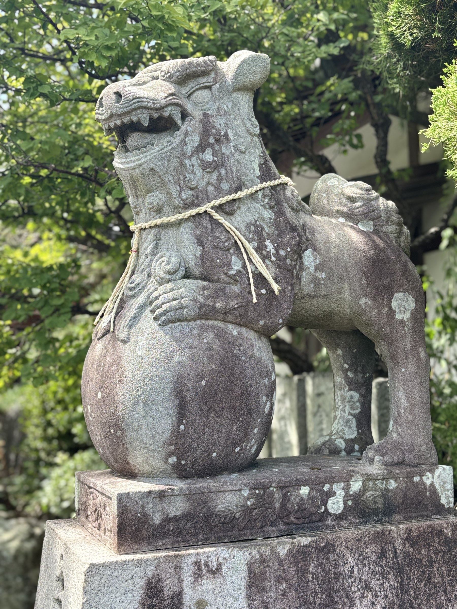
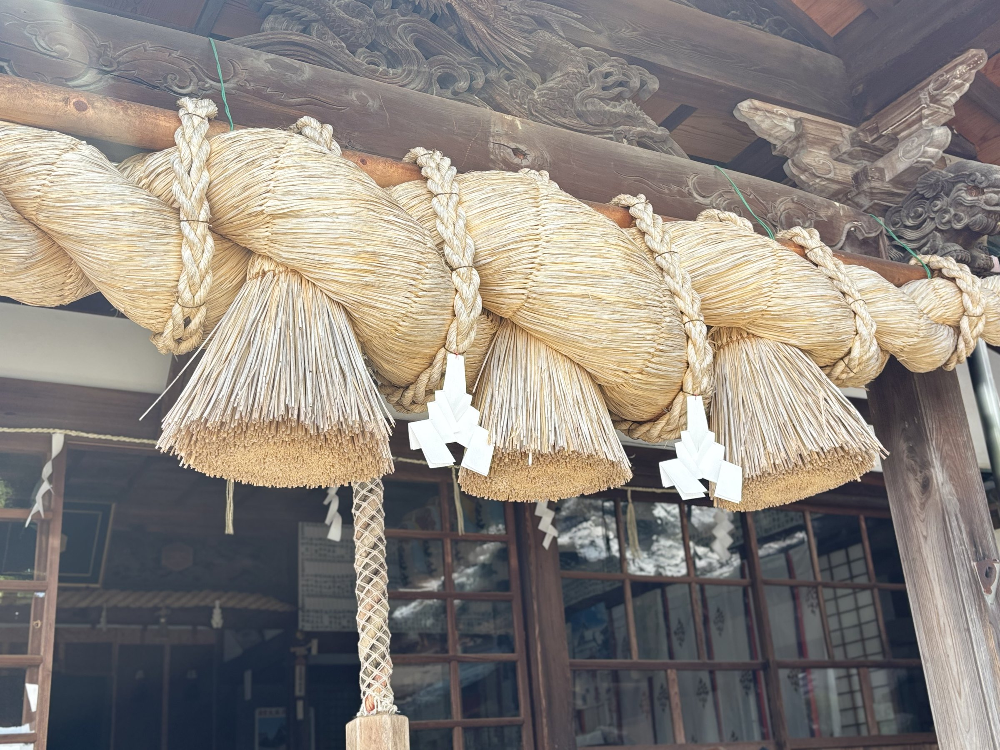
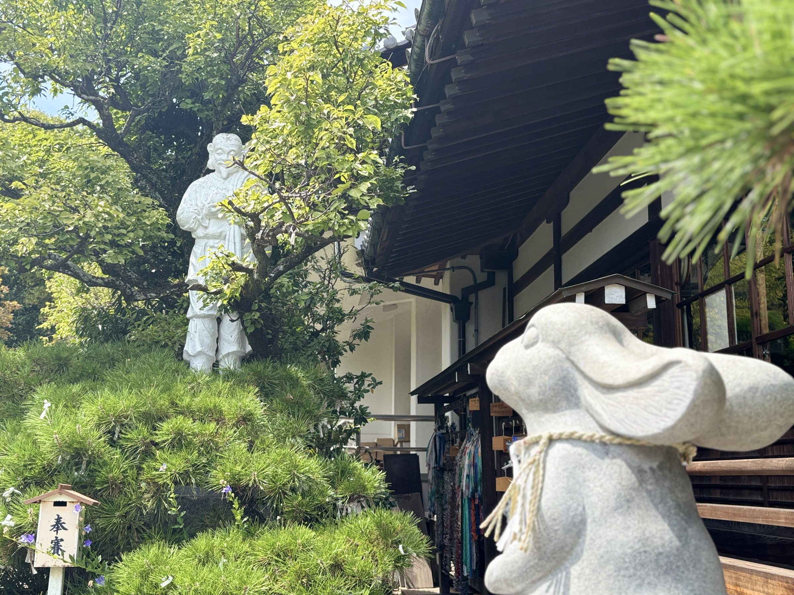
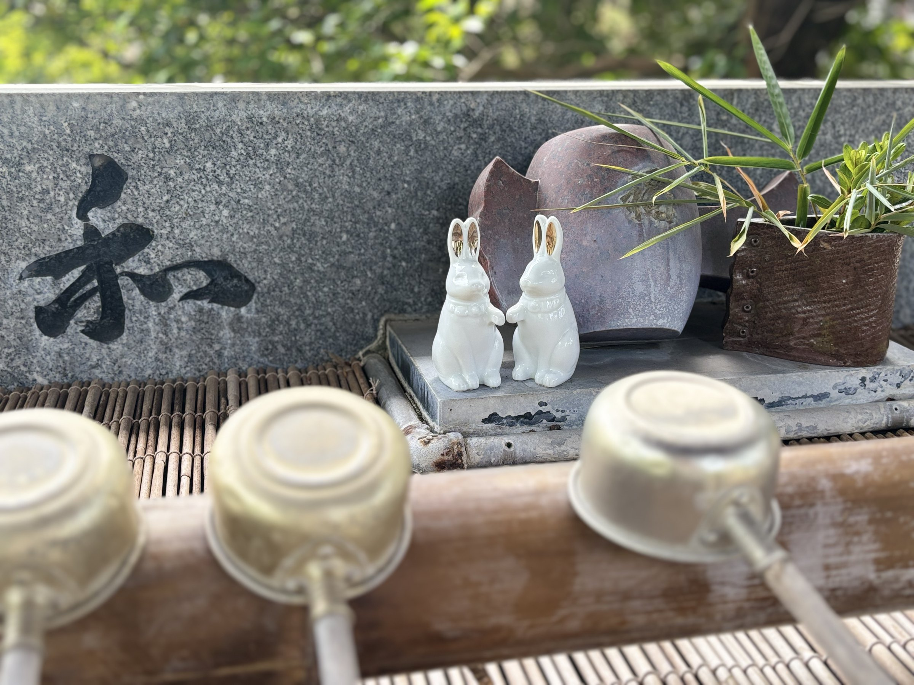

境内のご案内
境内をめぐる
御社殿
○○○○○○○○○○○○○○○○○○○○。○○○○○○○○○○○○○○○○○○○○○○○○○○○○○○。



ご縁の象徴
だいこくさま（大国主大神）とうさぎ
境内には大国主大神とうさぎの姿があります。因幡の白うさぎの伝承につながるご縁の象徴です。


この地の記憶
石碑
境内の石碑も、この地と出雲をつなぐ記憶です。写真と解説は、順次追加していきます。